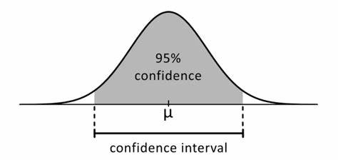

Intro to Statistics

This meme depicts a midwit. someone who's iq is exaclty 100.
68% of the population falls within 1 standard deviation of 15. Between 85 and 115
95% of the population falls within 2 standard deviations, between 70 and 130
The other 5% is split between your dumbest and smartest people.
What this meme suggest is that they agree with eachother.
Note: Emperical Rule 68% of elements fall within 1 standard deviation from the mean. 95% within 2
ONLY works on NORMAL DISTRIBUTIONS
If we do not have a mean or standard deviation we can estimate with a Confidence Interval
95% confidence interval is like we said earlier. 2 standard deviations from the mean. x2o

Other key term:
Critical Value
Point Estimate
Critical Value
Standard Deviation
Population
Sample Size